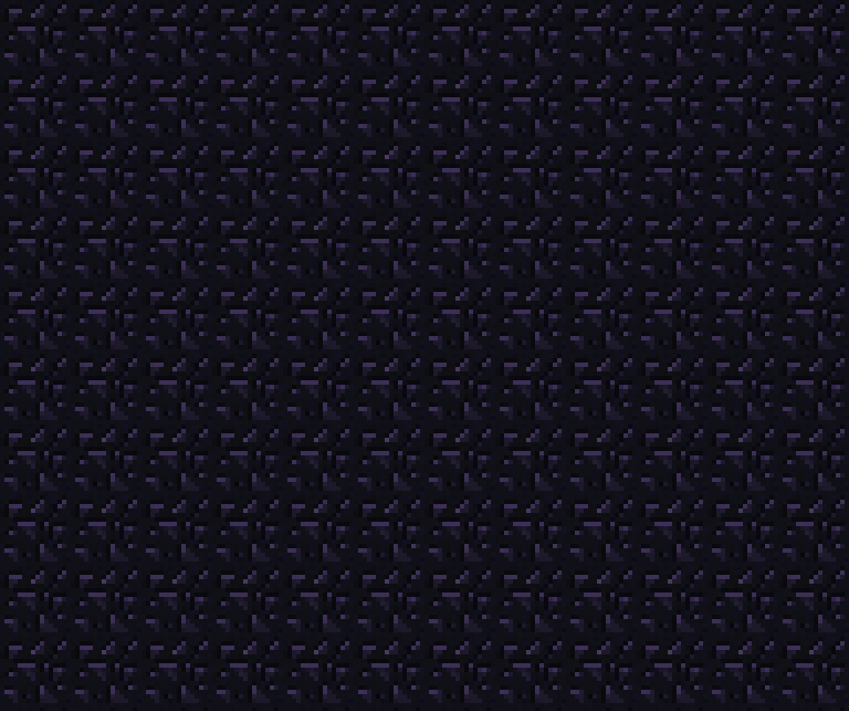
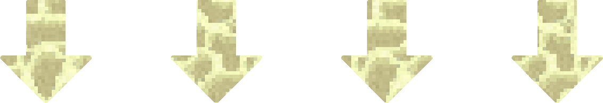

Cómo matar al Wither
MODO FÁCIL

Hay una forma muy fácil para matar al Wither en Minecraft y sin preocuparte de morir y perder tus objetos. Esta consiste en buguear a la criatura entre los bloques de bedrock de la dimensión del End.
Aquí abajo encontrarás un video con los pasos para matar al Wither de esta forma.
